Lorenz Schwarz Karlsruhe University of Arts and Design (HfG)
Winter Semester 2024/25 Course info
← Chapters · Download PDF ↓
A filter selectively emphasizes or attenuates certain frequencies in a signal:
→ Phase response is often perceptually less critical, but may be relevant in some contexts.
First order lowpass filter (left) and high pass filter (right)
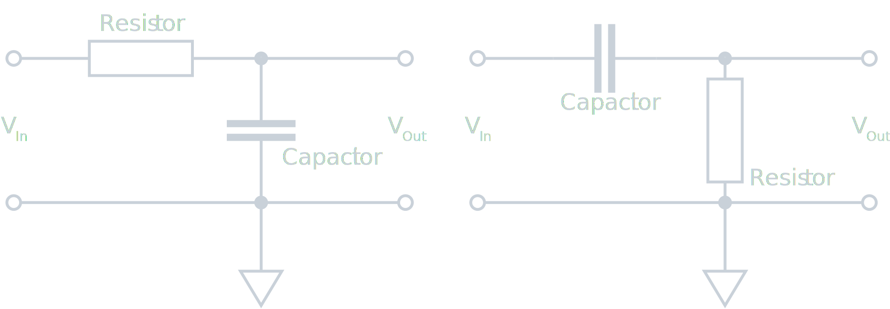
Transfer function plots graphically represent how a filter modifies input signals across frequencies.
Phase (left) and magnitude response (right) of a low-pass filter
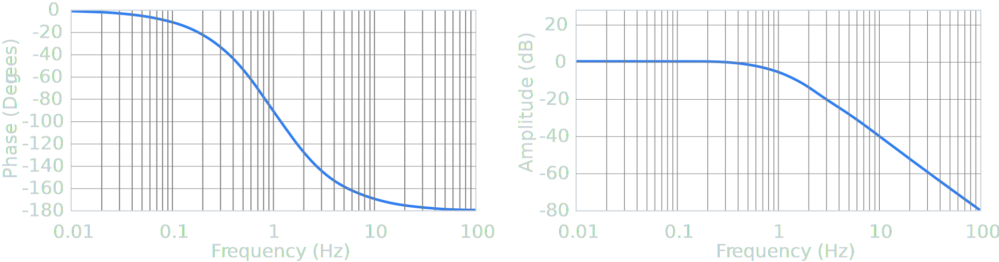
The Bode magnitude response plot shows the gain (ratio of output amplitude to input amplitude) of a filter as a function of frequency, typically displayed on a logarithmic scale.
Gain versus frequency:
Bode magnitude plot
Magnitude of gains
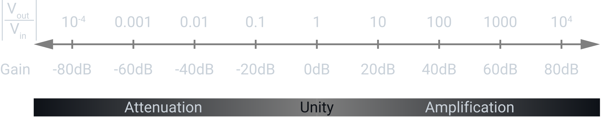
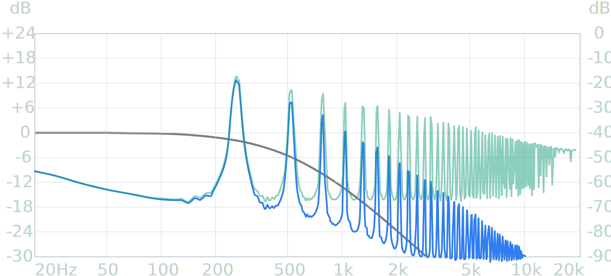
The output spectrum (blue) is the input spectrum (green) multiplied by the filter's magnitude response (grey curve).
▶ Sawtooth 260 Hz unfiltered - filtered
Filtered waveform in the time domain
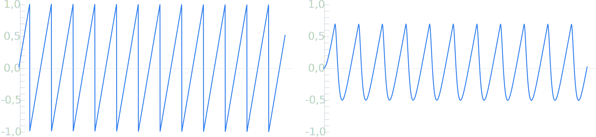
Input Output
A Bode phase plot is a graph that shows the phase relationship between a sinusoidal input signal and the output signal of a filter, as a function of frequency.
The following filters don't primarily remove or boost frequencies, but make use of a filters property to manipulate phase relationships of a signal to create interference patterns.
left: Input and outputs of a single-pole high-pass and low-pass filter
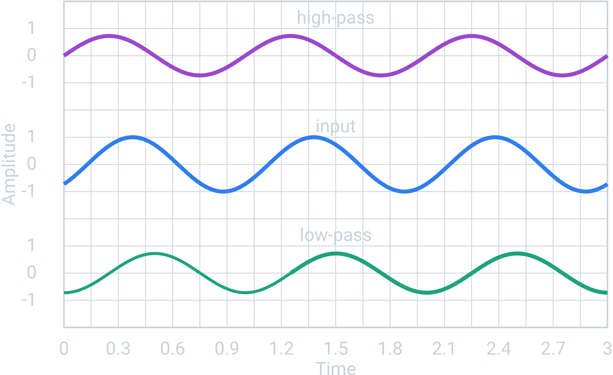
An all-pass filter changes the phase relationship between frequencies by introducing a frequency-dependent phase shift, while allowing all frequency components to pass with equal amplitude (unity gain).
Applications: Phaser audio effect
A comb filter mixes a signal with a delayed copy of itself:
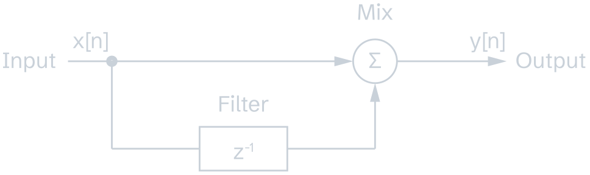
▶ White noise comb filtered
→ Comb filtering can be an unwanted acoustic artifact or a deliberate effect.
Description of the magnitude response
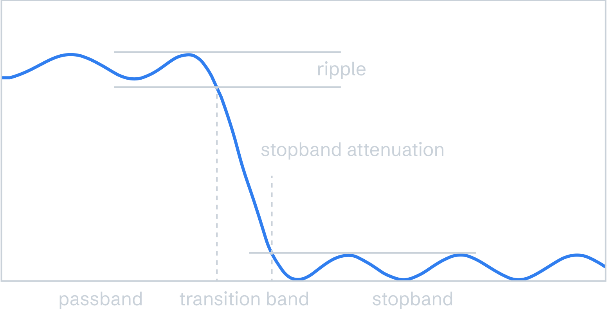
The range of frequencies passed by a band-pass filter or attenuated by a notch filter, defined as the difference between the upper and lower cutoff frequencies. It represents the section of the frequency spectrum that the filter affects most significantly.
Bandwidth, lower and upper corner frequency
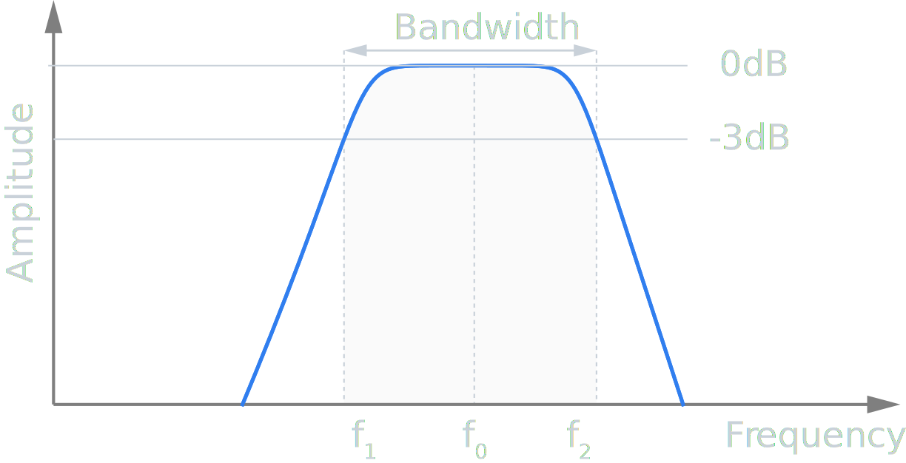
The cutoff frequency (also known as the half-power point) is the frequency at which the output voltage level decreases by 3 dB compared to the input voltage level (0 dB). Beyond this point, the output voltage progressively decreases relative to the input voltage.
The -3 dB level corresponds to the factor:
This means the output voltage is about 0.7071 times the input voltage.
The midpoint center frequency of a band pass filter is the geometric mean between the lower cuttoff frequency and the upper cutoff frequency.
Geometric mean:
Parameter that describes the selectivity of a filter, defined as the ratio of the center frequency to the bandwidth of the filter
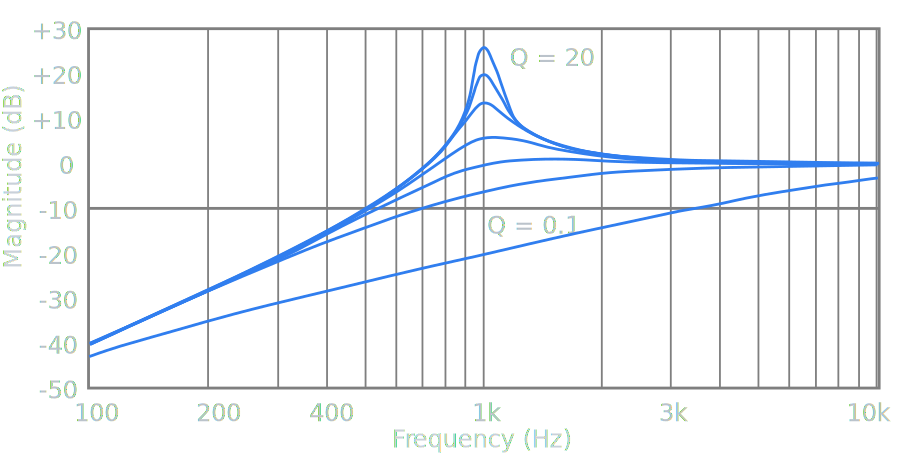
Filter resonance refers to the phenomenon where a filter exhibits a peak in amplitude at a specific frequency, often near the cut-off frequency.
▶ Low pass sweep
▶ Low pass sweep with resonance
▶ Low pass self-oscillating
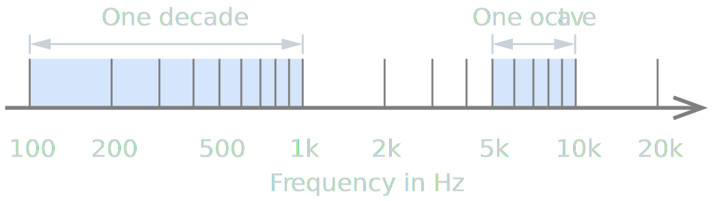
Center frequency
Bandwidth
Quality factor
Relation between center frequency (), bandwidth (), and Q-factor ()
Example: ,
large Q = narrow bandwidth small Q = broad bandwidth.
Roll-off describes the steepness of the transition from the passband to the stopband in a filter's transfer function graph.
▶ White noise corner frequency 500 Hz
Roll-off
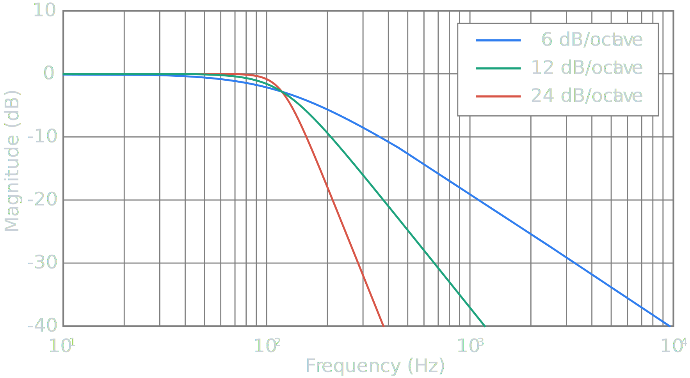
The filter order refers to the highest power of the variable in the polynomial of the filter's transfer function, which is the algebraic representation of the filter's behavior. The order determines the steepness of the filter's attenuation beyond the cutoff frequency.
For example 3rd order Butterworth polynomial:
→ Higher-order filters produce steeper slopes.
Each increase in filter order results in a roll-off rate increase of 6 dB per octave.
Overview of common filter types
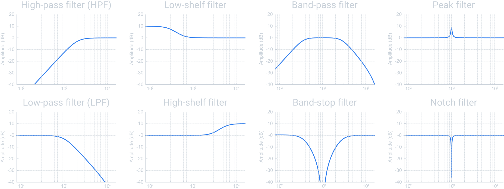
Low-pass and high-pass are the most fundamental filter types. They define a boundary frequency and progressively attenuate everything on one side of it.
A low-pass filter is the opposite of a high-pass filter:
Low-pass filter
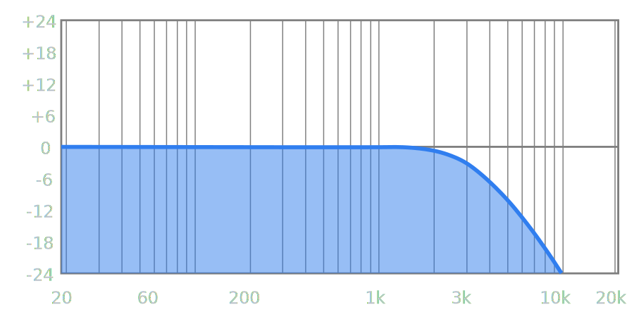
Low-pass with different Q factors
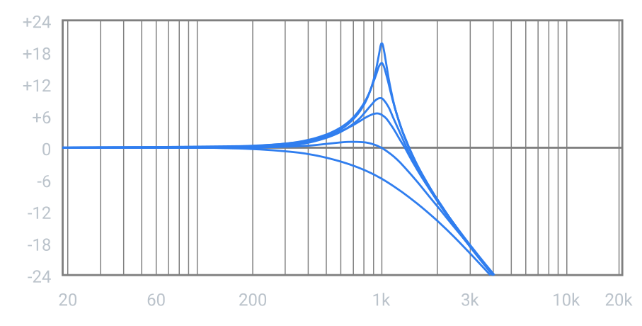
Low-pass filters attenuate high-frequency content and are widely used in audio processing and sound design.
A high-pass filter is the opposite of a low-pass filter:
High-pass filter
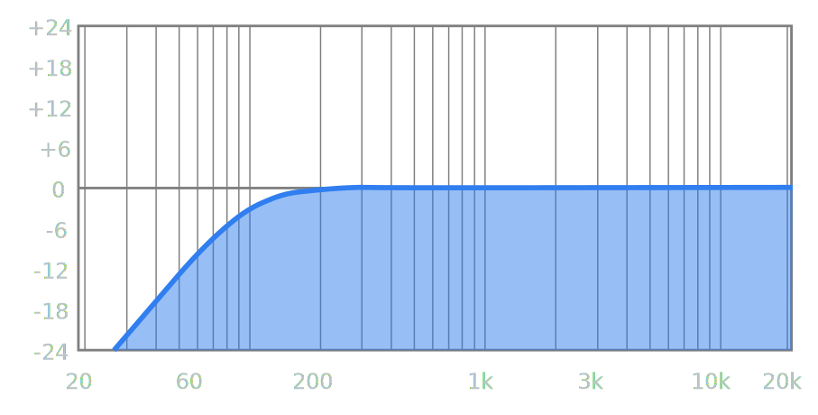
High-pass filters attenuate low-frequency content and are commonly used to improve clarity and technical efficiency in audio systems.
Unlike low-pass and high-pass filters, shelving filters boost or cut frequencies to a fixed level and then plateau rather than continuing to attenuate.
High shelf (cut)
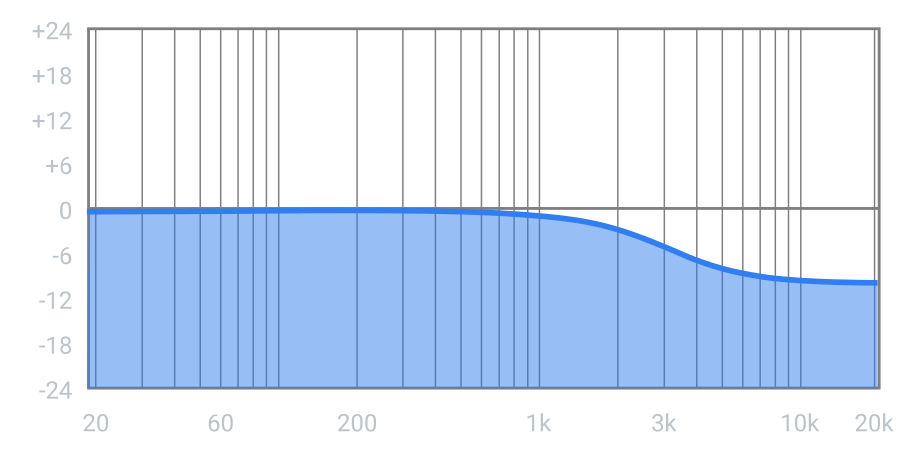
High shelf (boost)
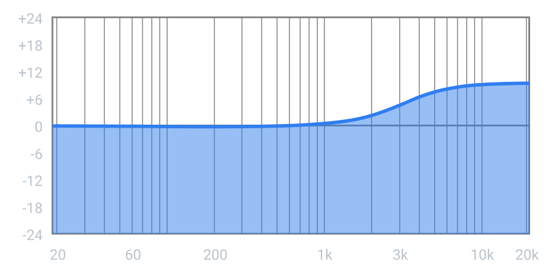
Low shelf (cut)
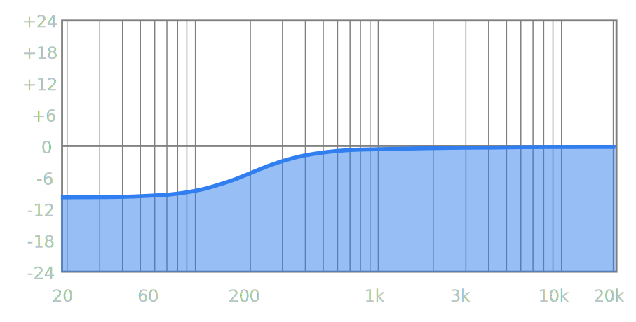
Low shelf (boost)
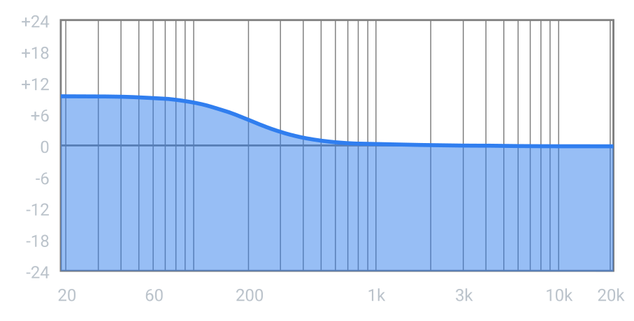
Shelving equalizers are commonly used for broad, musical tonal shaping rather than precise corrective filtering.
Band-pass filters target a specific frequency range rather than everything above or below a single cutoff, making them useful for isolating or emphasizing selected spectral content.
Band pass filter
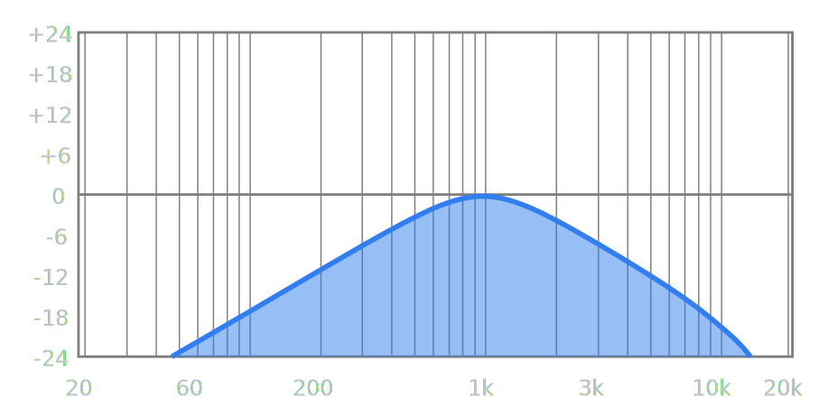
Band-pass filters isolate a defined frequency range.
A band-stop filter is the opposite of a band-pass filter:
Band-stop filter
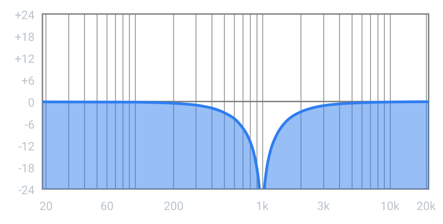
A notch filter is an extremely narrow banded type of band-stop filter, designed to attenuate a very specific frequency or a small range of frequencies while leaving other frequencies unaffected.
Notch filter
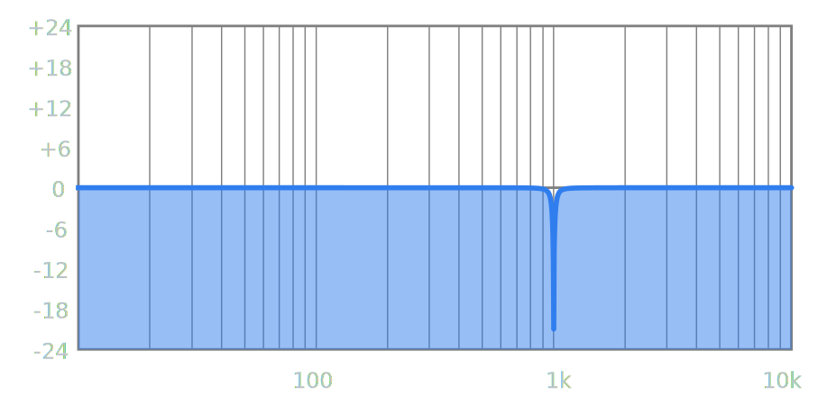
Notch filters remove a very narrow frequency band while leaving the rest of the spectrum largely unaffected.
→ Notch filters enable precise removal of unwanted frequencies without altering overall timbre.
A peak filter boosts or attenuates frequencies within a specified range around a center frequency, forming a "bell-shaped" response.
Peak filter
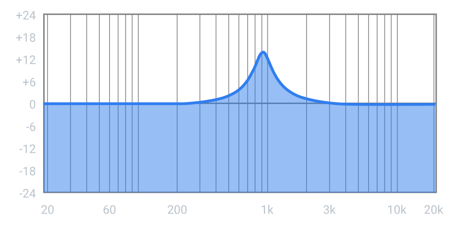
Peak (bell) filters are the primary building blocks of parametric equalizers, allowing localized gain adjustments around a center frequency.
Parametric equalizers are more versatile than graphic equalizers:
4-band parametric EQ (low pass)
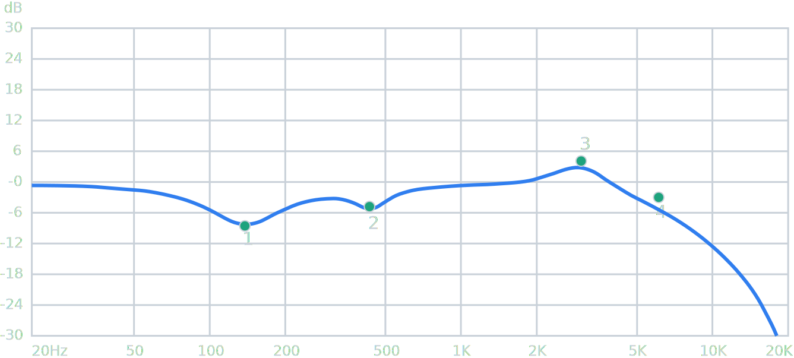
A graphic equalizer allows amplification or attenuation of predetermined frequency bands using adjustable faders.
The impulse response (IR) describes a filter’s output when excited by a single-sample impulse.
Finite Impulse Response (FIR)
Infinite Impulse Response (IIR)
Biquad filters are the building blocks of most digital EQs and filters. A single biquad can implement LP, HP, BP, notch, peak, or shelf filters by changing its coefficients. Higher-order filters are built by cascading multiple biquads.
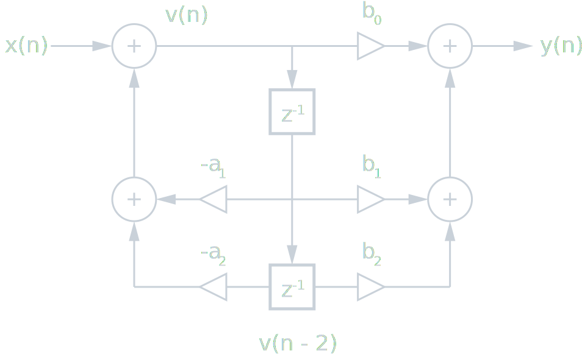
Second-order DF-II structure
Original content: © 2025 Lorenz Schwarz Licensed under CC BY 4.0. Attribution required for all reuse.
Includes: text, diagrams, illustrations, photos, videos, and audio.
Third-party materials: Copyright respective owners, educational use.
Contact: lschwarz@hfg-karlsruhe.de
← Chapters